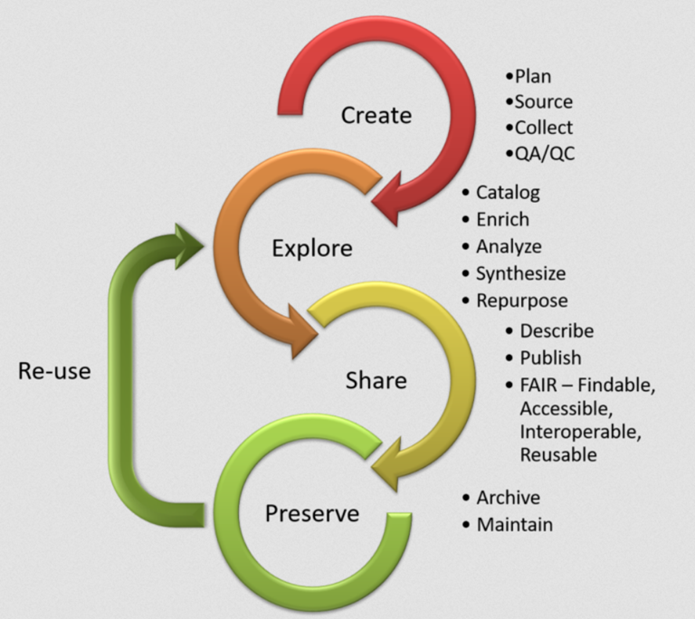
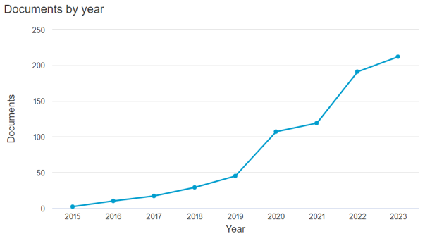

PSF CREONS / UMI SOURCE
(Direction des Bibliothèques et de l’Information Scientifique et Technique - UVSQ)
27/05/2026
Lien vers cette présentation : https://m-salvadori.github.io/pgd_creons/
Accéder au code source : https://github.com/m-salvadori/pgd_creons
La science ouverte est la diffusion sans entrave des résultats, des méthodes et des produits de la recherche scientifique. Elle s’appuie sur l’opportunité que représente la mutation numérique pour développer l’accès ouvert aux publications et – autant que possible – aux données, aux codes sources et aux méthodes de la recherche.
2e Plan National pour la Science Ouverte (2021)
Déclaration de San Francisco sur l’évaluation de la recherche
Aux fins de l’évaluation de la recherche, tenir compte de la valeur et de l’impact de tous les résultats de travaux de recherche (y compris les jeux de données et les logiciels) en plus des publications scientifiques.
Définition des principes FAIR
[…] apporter des éclaircissements sur les objectifs et les principes d’une bonne gestion et d’une bonne gouvernance des données, et définir des lignes directrices simples à l’intention de ceux qui publient et/ou conservent des données scientifiques […]
(→ voir la partie 4)
Plan National (français) pour la Science Ouverte 2018-2021
Mesure n° 4 :
Rendre obligatoire la diffusion ouverte des données de recherche issues de programmes financés par appels à projets sur fonds publics.
Le coordinateur ou la coordinatrice et les partenaires s’engagent en cas de financement (…) à fournir dans les 6 mois qui suivent le démarrage du projet un plan de gestion des données (PGD).
Recommandation de l’UNESCO sur une science ouverte
Les données de recherche ouvertes sont mises à disposition en temps utile, dans un format convivial, exploitable et lisible par les humains et les machines, conformément aux principes de bonne gouvernance et de bonne gestion des données, notamment les principes FAIR (Facilement trouvable, Accessible, Interopérable et Réutilisable), à l’aide d’opérations de traitement et de maintenance régulières.
Volet science ouverte du programme de financement Horizon Europe
Horizon Europe imposera l’accès ouvert immédiat à toutes les publications scientifiques et une gestion responsable des données de recherche afin que les données soient faciles à (re)trouver, accessibles, interopérables et réutilisables (FAIR). Les données seront rendues «aussi ouvertes que possible, mais pourront rester aussi fermées que nécessaire», en tenant compte des intérêts ou des contraintes légitimes.
Des déclarations programmatiques et des recommandations (DORA, UNESCO…)
Traduites en plans d’actions nationaux (PNSO en France) voire locaux (cf. le Document unique de la science ouverte de l’Université Paris-Saclay).
Puis en obligations par différents financeurs de la recherche (ANR, Commission Européenne…)
→ Un contexte d’extension de l’open access à la science ouverte d’une part, d’institutionnalisation des valeurs de ce mouvement d’autre part.
Qu’appelle-t-on données de la recherche ?
Enregistrements factuels (chiffres, images, sons, vidéos…), qui sont utilisés comme sources principales pour la recherche scientifique et sont également reconnus par la communauté scientifique comme nécessaires pour valider les résultats de recherche.
Principes et lignes directrices pour l’accès aux données de la recherche financée sur fonds publics (2007 → fait toujours référence)
Les données de la recherche désignent les informations, et en particulier les faits ou chiffres collectés pour être analysés et traités pour alimenter des réflexions, discussions ou calculs. Dans un contexte de recherche, ces données sont, par exemple, des statistiques, des résultats d’expériences, des mesures, des observations sur le terrain, des résultats d’enquêtes, des enregistrements d’entretiens ou des images. Il s’agit plus spécifiquement de données disponibles sous forme numérique.
Aux fins de la présente directive, on entend par « données de la recherche », des documents se présentant sous forme numérique, autres que des publications scientifiques, qui sont recueillis ou produits au cours d’activités de recherche scientifique et utilisés comme éléments probants dans le processus de recherche, ou dont la communauté scientifique admet communément qu’ils sont nécessaires pour valider des conclusions et résultats de la recherche.
Directive UE 2019/2014 concernant les données ouvertes, art. 2§9 (2019)
Les données de la recherche sont définies comme l’unité de base sur laquelle s’appuie le raisonnement scientifique, unité qui sous-tend les hypothèses de recherche d’une part, l’administration de la preuve d’autre part.
Ce sont des objets très hétérogènes, nécessairement numériques, complémentaires des publications proprement dites, mais qui peuvent exister indépendamment de ces dernières.
Le terme est parfois trompeur, dans la mesure où les données ne sont pas “données” (mais captées, construites ou reconstuites).
Dans certains champs, on préférera parler de sources ou de matériaux, non sans malentendus liés aux traditions épistémologiques ou méthodologiques disciplinaires.
La suite de cette présentation propose une typologie des données de recherche, inspirée notamment de Borgman (2020).
Cette typologie ne fait pas autorité : elle vise surtout à mieux faire comprendre, par l’exemple, ce que recouvrent les données de la recherche dans différentes disciplines.
→ Le partage de ces données est recommandé, pour enrichir la connaissance et éviter la perte de données.
→ Le modèle – c’est-à-dire souvent l’algorithme informatique – a souvent plus de valeur que les données elles-mêmes (les entrées et les sorties).
→ Les protocoles sont pensés pour “établir des hypothèses ou mettre à l’épreuve de nouvelles lois” (Borgman). Partager ces données permet de répliquer les expériences, et évite les duplications longues et coûteuses.
Cette catégorie et la suivante sont absentes de Borgman (2020) : elles ont émergé pour typer des données qui ne “rentraient” pas facilement dans les précédentes catégories.
→ La mutualisation de ces données est recommandée car le processus est souvent coûteux ; nécessitent toujours une analyse humaine consciente des biais possibles dans la création du corpus.
→ Ces données sont considérées comme des socles dans de nombreuses disciplines.
Données d’observation : GUYADIV: A network of forest inventories across French Guiana covering 100 ha and 90,000 trees (1986 – 2018) → ici pour le jeu de données complet, ici pour un exemple de données tabulées.
Données expérimentales : Phenotyping data for rice lines edited in the resistance gene against rice yellow mottle disease, rymv1, obtained from the Kitaake variety → ici pour le jeu de données complet, ici pour la méthodologie, ici pour le code…
Les projets de recherche s’élaborent à partir de matériaux, de sources, d’expériences…
… un ensemble de données collectées, manipulées, analysées par les chercheurs…
… le long d’un processus qui s’achève souvent par une publication (article, livre, colloque…).
→ Entre le début et la fin du projet, les données ont été transformées, elles ont vécu, la manière de les interpréter, leur signification même ont pu changer.
On parle couramment, en ce sens, d’un cycle de vie de la donnée.
On peut voir ce cycle comme un cercle…
(D’après une ressource de DoRANum)
(un autre cercle)
… ou comme un cheminement…
suite →
D’après On Pop Data | URL de l’image originale
… qu’on peut également modéliser ainsi…
… voire selon des représentations plus ésotériques…

→ Vos données vont évoluer dans le temps de la recherche.
→ Le regard que vous portez sur elles va changer ; leur volume, leur format, leur intérêt potentiel également.
→ La question du stockage (à court terme) et de l’archivage (à long terme) est cruciale et se pose différemment à chaque étape du projet.
→ Sans oublier la question de l’ouverture : pourrez-vous partager vos données ? Auprès de qui, et comment ?
→ Chaque phase du cycle de vie de la donnée demande donc de regarder celles-ci d’un oeil neuf, et de se poser de nouvelles questions.
→ Pour vous y aider, il existe un ensemble de principes qui peuvent servir de ligne directrice : les principes dits FAIR.
FAIR est un acronyme formé à partir des initiales de quatre concepts :
Chacun de ces concepts peut se décliner en un ensemble de conseils et de bonnes pratiques, détaillés dans les slides qui suivent.
→ Selon la documentation consultée (voir plus loin celle de DORANUM), ces conseils peuvent être rattachés à l’un ou l’autre des principes FAIR, signe qu’il s’agit plus d’une conception générale de la bonne gestion des données que d’un protocole à suivre rigoureusement.
Elaborés à partir de 2014 et 2016, les principes FAIR ont été formalisés dans une publication de 2016, Wilkinson et al. (2016)
Ils s’agit d’une tentative de définir, de manière consensuelle, ce qu’est une bonne gestion des données (de recherche, en particulier).
L’objectif des principes FAIR recoupe fortement les enjeux de la science ouverte. Il s’agit de faciliter :

Evolution du nombre d’articles référencés dans Scopus mentionnant les principes FAIR dans leur résumé.
Faciliter la découverte de ses données (par des humains et par des moteurs de recherche ou des robots au sens large) suppose de respecter quelques conditions :
→ Déposer son jeu de données dans un entrepôt dédié.
→ Assigner un identifiant unique à son jeu de données
→ Décrire son jeu de données au moyen d’un schéma standardisé de métadonnées
→ Attribuer à son jeu de données des descripteurs relatifs à son contenu (mots-clefs, vocabulaire contrôlé).
Que votre jeu de données accompagne ou non une publication, la condition première pour qu’il ressorte dans les résultats de recherche est bien sûr qu’il soit disponible quelque part sur le Web. Plutôt que des solutions type cloud peu adaptées, nous suggérons de déposer vos données (partageables) dans un entrepôt dédié à cet usage.
→ Le terme d’entrepôt de données (data repository) s’est imposé pour désigner les plateformes spécialisées dans le dépôt, le stockage et le partage des données de recherche. Il en existe de tout type : institutionnels ou privés, disciplinaires ou généralistes…
Certains éditeurs scientifiques vous inciteront peut-être à déposer les jeux de données accompagnant vos publications dans leur propre entrepôt. Pour éviter toute mainmise sur vos données, nous recommandons plutôt un entrepôt public et ouvert (comme DataSuds).
En contexte numérique/web, un identifiant unique est la plupart du temps un DOI (Digital Object Identifier) : une suite de caractères alphanumériques attribuée, de manière pérenne, à un article ou à un jeu de données. Un DOI peut prendre la forme d’un lien cliquable redirigeant toujours vers le jeu de données.
Un DOI facilite la citation de votre jeu de données, et permet d’y accéder en un clic de manière plus fiable qu’une simple URL.
L’attribution d’un DOI est généralement prise en charge par l’entrepôt dans lequel vous déposez votre jeu de données.
Les métadonnées sont des données descriptives : des données sur les données.
Il existe plusieurs manières de décrire votre jeu de données, d’indiquer qui l’a produit, quand, dans quel contexte, ce qu’il contient, comment le lire, à quelles conditions le réutiliser… Toutes ces informations constituent les métadonnées de votre jeu de données.
Pour faciliter la lisibilité de vos métadonnées, en particulier par les moteurs de recherche ou les bases de données bibliographiques, il est essentiel de compléter celles-ci en suivant un schéma standardisé (celui que les robots de collecte et d’indexation s’attendent à trouver).
→ le Dublin Core est le plus courant de ces schémas, mais il en existe d’autres, plus précis ou plus complets, qui prennent mieux en compte les spécificités disciplinaires.
<?xml version="1.0" encoding="UTF-8"?>
<metadata xmlns:xsi="http://www.w3.org/2001/XMLSchema-instance"
xmlns:dc="http://purl.org/dc/elements/1.1/"
xmlns:dcterms="http://purl.org/dc/terms/"
xmlns="http://dublincore.org/documents/dcmi-terms/">
<dcterms:title>Effect of commonly used protective molecules to preserve Carnobacterium maltaromaticum CNCM I-3298 during freeze-drying and storage</dcterms:title>
<dcterms:identifier>https://doi.org/10.57745/WABJL6</dcterms:identifier>
<dcterms:creator>Fonseca, Fernanda</dcterms:creator>
<dcterms:creator>Lieben; Pascale</dcterms:creator>
<dcterms:creator>Wood, Xavier</dcterms:creator>
<dcterms:creator>Cenard, Stéphanie</dcterms:creator>
<dcterms:creator>Passot, Stéphanie</dcterms:creator>
<dcterms:publisher>Recherche Data Gouv</dcterms:publisher>
<dcterms:issued>2026-05-22</dcterms:issued>
<dcterms:modified>2026-05-22T13:35:47Z</dcterms:modified>
<dcterms:description>This dataset contains experimental data on the protective ability of commonly used molecules to
protect Carnobacterium maltaromaticum CNCM I-3298 during freeze-drying at pilot scale and storage of freeze-dried
samples up to 4 weeks at 25 °C. </dcterms:description>
<dcterms:subject>Agricultural Sciences</dcterms:subject>
<dcterms:subject>Medicine, Health and Life Sciences</dcterms:subject>
<dcterms:subject>lactic acid bacteria</dcterms:subject>
<dcterms:subject>glass transition temperature</dcterms:subject>
<dcterms:subject>FTIR spectroscopy</dcterms:subject>
<dcterms:subject>formulation</dcterms:subject>
<dcterms:subject>freeze drying</dcterms:subject>
<dcterms:language>English</dcterms:language>
<dcterms:isReferencedBy>à compléter une fois l'article accepté</dcterms:isReferencedBy>
<dcterms:date>2026-05-22</dcterms:date>
<dcterms:contributor>Fonseca, Fernanda</dcterms:contributor>
<dcterms:dateSubmitted>2026-04-28</dcterms:dateSubmitted>
<dcterms:type>Dataset</dcterms:type>
<dcterms:license>etalab 2.0</dcterms:license></metadata>Un descripteur est un mot-clef (semblable à un hashtag) qui décrit le contenu de votre jeu de données, ou fournit des informations à son sujet (par exemple, le domaine de recherche dans lequel il s’inscrit).
Un jeu de données indexé avec les bons descripteurs a plus de chances de ressortir lors d’une recherche dans une base de données.
Si le choix de ces termes est généralement libre, il est recommandé de suivre les conventions en vigueur dans votre domaine disciplinaire ; vous pouvez vous appuyer, lorsqu’ils existent dans votre champ, sur des dictionnaires de mots-clés (vocabulaires contrôlés voire thesaurus) comme le GEMET ou l’ELSST : ceux-ci sont pensés pour minimiser l’ambiguïté dans les descriptions.
→ Quel que soit le schéma de métadonnées que vous choisirez, il comportera probablement un champ dédié pour la saisie de mots-clés (par exemple, subject en Dublin Core).
Vos données sont désormais faciles à trouver : déposées dans un entrepôt, dotées d’un DOI, précisément décrites par des métadonnées et des mots-clefs standardisés, elles devraient ressortir dans les résultats de recherche.
Il vous reste à vous assurer que vos données sont accessibles : qu’il sera possible de les consulter / télécharger, selon les conditions que vous aurez fixées au préalable. En slide suivante, quelques bonnes pratiques que nous vous conseillons.
→ S’assurer que l’entrepôt choisi permet de télécharger les données selon un protocole standard et ouvert (HTTP ou FTP dans la plupart des cas, via une API REST si possible.)
→ Définir des conditions d’accès, si vous considérez que vos données ne peuvent ni ne doivent circuler largement. Si vous choisissez de restreindre l’accès à vos données, assurez-vous que les métadonnées, a minima, restent accessibles à tout un chacun.
→ Créer un fichier de type README décrivant la structure et le contenu de votre jeu de données, ainsi que les obstacles susceptibles d’en restreindre l’accès (conditions légales, logiciels spécifiques nécessaires…).
En informatique, l’interopérabilité désigne, pour aller vite, “la capacité à communiquer de deux logiciels différents, issus d’équipes de développement différentes” (Bortzmeyer (2019)) ; elle repose en particulier sur l’emploi de protocoles communs, ouverts, et documentés, comme HTTP (pour le Web) ou SMTP (pour le mail).
→ Le I des principes FAIR hérite de cette conception et l’applique aux données de la recherche.
Pour que vos données puissent être à la fois bien comprises et réutilisées (y compris par d’autres que vous !), il faut s’assurer de leur intéropérabilité : cela permettra de les inclure dans de nouveaux flux de travail, de les agréger facilement à d’autres, et de créer ainsi des connexions entre des données de diverses sources.
→ Préférez pour ce faire les formats de fichier ouverts et libres (.csv, .txt, .md…) aux formats propriétaires (.xslx, .docx, …) (→ voir la slide dédiée). D’une manière générale, préférer autant que possible le format texte (brut) aux formats binaires (voir → Perret (2023)).
→ Assurez-vous que vos fichiers mais également, par exemple, les intitulés de vos variables dans un tableur, respectent les conventions de nommage habituelles : dates au format YYYY-MM-DD, pas de caractères spéciaux comme ?!@*%{[<>), préférer les tirets (- ou _) aux points, espaces ou barres obliques.
→ Documentez le plus possible votre travail, par exemple dans le fichier README : d’où proviennent ces données ? Quand et comment les avez-vous produites/collectées/transformées ? De quels biais ou quelles limitations ceux qui les consultent doivent-ils avoir conscience ?
→ Enfin, si vous avez publié un article qui s’appuie sur votre jeu de données, pensez à lier votre jeu de données à cet article en ajoutant le DOI de ce dernier dans les métadonnées. Cela facilitera la navigation de l’un à l’autre, et liera les deux objets dans les bases de données bibliographiques.
Si vos données sont interopérables, elles seront réutilisables d’un point de vue technique. Il vous reste à définir les conditions de cette réutilisation par d’autres personnes que vous-mêmes.
→ La première chose à faire est de vous assurer que vous disposez vous-mêmes des droits de partager vos données. Si l’ouverture des données de recherche est la règle, il existe en effet des exceptions qui peuvent en restreindre le partage : les données personnelles (identifiant des personnes) sont encadrées en Europe par le RGPD, certaines données sont couvertes par le secret médical, le secret défense, le secret des affaires…
→ Même si vos données sont partageables sans restriction, il est préférable de leur attribuer une licence d’utilisation qui en encadre la réutilisation. Cette licence figure généralement dans les métadonnées.
Parallèlement aux licences Creative Commons, d’ordinaire attribuées aux publications, la Licence Ouverte Etalab a été pensée pour s’appliquer aux données. Elle autorise tous les usages (y compris commerciaux) d’un jeu de données, sous réserve d’en mentionner la paternité.
Le document sur la slide suivante est interactif : il s’agit d’une présentation des principes FAIR (légèrement différente de ce qui précède) reprise de la plateforme de formation à distance DoRANum.
Les slides qui précédent ont longuement insisté sur la nécessité d’utiliser des formats de fichier ouverts afin de garantir l’accessibilité, l’interopérabilité et la réutilisation des jeux de données.
Un format (en informatique) est un ensemble de règles décrivant une manière d’encoder de l’information dans un fichier. DOCX et PDF, par exemple, sont des formats : tous deux permettent d’encoder du texte et des images dans un fichier, mais les spécifications pour ce faire sont différentes (et le fichier qui en résulte également).
suite ➔
Un format est dit ouvert lorsque ses spécifications (son guide d’utilisation, pour aller vite) sont publiquement accessibles : c’est cette documentation qui permet aux développeurs de s’assurer que leur application peut lire ou produire du PDF, par exemple.
Ouvert s’oppose à fermé et non nécessairement à propriétaire : PDF est ainsi un format ouvert qui est propriété d’Adobe. Les formats développés par Microsoft (DOCX, XSLT) sont parfois considérés comme semi-ouverts en raison de la complexité de leurs spécifications ➔ Vignoli (2025).
suite ➔
Parmi les formats ouverts les plus utilisés :
→ XML et JSON sont des formats dits d’échange de données structurées : ils sont conçus pour être à la fois lisibles par des humains et optimisés pour la lecture par des machines.
Le Data Management Plan (DMP) ou Plan de Gestion de Données (PGD) est un document synthétique qui aide à organiser et anticiper toutes les étapes du cycle de vie de la donnée. Il explique pour chaque jeu de données comment seront gérées les données d’un projet, depuis leur création ou collecte jusqu’à leur partage et leur archivage.
DoRANum, PGD : fiche synthétique, publiée en 2017, mise à jour en 2023
Concrètement, le PGD est un texte de réflexion et de cadrage, dont l’intérêt principal est qu’il force à se poser la question de la gestion des données – et de leur qualité – dès les premières phases d’un projet.
Dans la mesure où ce document traite de l’ensemble du cycle de vie de la donnée (→ voir la partie dédiée à cette notion), y compris leur ouverture et leur devenir à long terme, il est susceptible de modeler certains de vos choix méthodologiques. En ce sens, c’est un document de nature scientifique ; il est d’ailleurs évolutif.
C’est aussi un document administratif : le PGD fait par exemple partie des livrables de tout projet financé par l’ANR ou la Commission Européenne, très tôt dans le déroulé du projet (à 6 mois).
suite →
Un PGD est évidemment un document partageable (voir ici) : il peut donc être utile d’en consulter quelques-uns lors du démarrage d’un projet – voire pendant la rédaction du vôtre – pour comprendre comment d’autres chercheurs au sujet proche ont pu aborder le traitement de leurs données.
Enfin, soigner la rédaction de votre PGD vous permettra en définitive de gagner du temps à plusieurs niveaux :
Il existe plusieurs modèles différents de PGD : les organismes de recherches, les financeurs, les universités voire les laboratoires proposent souvent le leur propre.
Ce sont toutefois souvent les mêmes informations qu’il faut y faire figurer, dans un ordre parfois différent.
La slide suivante détaille la trame du modèle de PGD proposé par l’ANR.
Informations générales et renseignements administratifs → Titre du projet, identifiants ANR, coordinateur, partenaires, etc.
Description des données et collecte ou réutilisation de données existantes → Type, format, volume estimé, méthodes de collecte, données préexistantes utilisées.
Documentation et qualité des données → Standards de métadonnées, méthodes de validation et de contrôle qualité.
Stockage et sauvegarde pendant le processus de recherche → Emplacement des données, outils utilisés, fréquence de sauvegarde, sécurité.
Exigences légales et éthiques, codes de conduite → RGPD, anonymisation, consentement, accès restreint, référent déontologie.
Partage des données et conservation à long terme → Licences, modalités d’ouverture, dépôts envisagés, durée de conservation.
Responsabilités et ressources en matière de gestion des données → Personnes impliquées, rôles, budget, outils, accompagnement institutionnel.
En résumé : le contenu d’un PGD.
(Schéma issu de DoRANum)
→ Vous n’êtes pas seul.e.s pour rédiger votre PGD.
Parmi les interlocuteurs potentiels que vous pouvez solliciter figurent :
DMP OPIDoR est un outil d’aide en ligne à la rédaction de PGD.
DMP OPIDoR met à disposition des modèles de PGD produits par les organismes et les agences de financement. Un parcours de création de plan guide l’utilisateur étape par étape pour choisir le modèle adapté. Les chercheurs peuvent également profiter de recommandations proposées par certains organismes pour mettre en avant leurs services et apporter de l’aide dans la gestion des données de recherche.
Parcourir le site web DMP OPIDoR.
Karine Pellerin, Aide aux porteurs de projets, Données de recherche en STM
→
Michel de Moura, Données de recherche en STM, Codes et logiciels
→
Marceau Salvadori, Données de recherche en SHS, Humanités numériques
→
Atelier de la donnée DatASaclay
→
DoRANum, plateforme de formation en ligne sur la gestion et le partage des données de la recherche. Beaucoup de ressources riches et réutilisables.
Des exemples de Plans de Gestion de Données rédigés sont disponibles :
- directement sur DMP Opidor (inutile de s’identifier)
- sur HAL, via une recherche sur le sous-type de document “plan de gestion des données” : liste complète ici.
{kind=link}